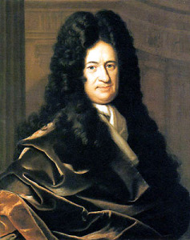

Isaac Newton y Gottfried Wilhelm Leibniz son considerados los padres del cálculo moderno. Independientemente, desarrollaron conceptos fundamentales y técnicas para el cálculo diferencial e integral. Newton trabajó en el método de las diferencias finitas y formuló el concepto de derivada, mientras que Leibniz desarrolló el concepto de integral y la notación diferencial e integral que aún se utiliza hoy en día.
Siglo XVIiI:
Durante este período, el cálculo comenzó a desarrollarse y formalizarse como una disciplina matemática. La obra "Principia Mathematica" de Newton y los trabajos de Leibniz sentaron las bases para el estudio del cálculo diferencial e integral.
Siglo XIX:
El cálculo experimentó un rápido desarrollo y se convirtió en una herramienta fundamental en diversas áreas de la ciencia y la ingeniería. Matemáticos como Augustin-Louis Cauchy, Karl Weierstrass y Bernhard Riemann contribuyeron significativamente a la teoría del cálculo, formalizando definiciones y teoremas importantes.
INVENTORES DE CALCULO:
En el último tercio del siglo XVII, Newton (en 1664 - 1666) y Leibniz (en 1675) inventaron
el Cálculo (de forma independiente):
Unificaron y resumieron en dos conceptos generales, el de integral y derivada, la gran variedad
de técnicas diversas y de problemas que se abordaban con métodos particulares.
Desarrollaron un simbolismo y unas reglas formales de "cálculo" que podían aplicarse a
funciones algebraicas y trascendentes, independientes de cualquier significado geométrico,
que hacía casi automático, el uso de dichos conceptos generales.
Reconocieron la relación inversa fundamental entre la derivación y la integración.
Newton llamó a nuestra derivada una fluxión - una razón de cambio o flujo; Leibniz vio la
derivada como una razón de diferencias infinitesimales y la llamó el cociente diferencial. Newton
hizo sus primeros descubrimientos diez años antes que Leibniz quien, sin embargo, fue el primero
en publicar sus resultados.

A principios de 1665 descubre el teorema del binomio y el cálculo con las series infinitas. A
nales de ese mismo año, el método de fluxiones, es decir, el cálculo de derivadas. En 1666 el
método inverso de fluxiones y la relación entre cuadraturas y fluxiones. En esos dos años también
inició las teorías de los colores y de la gravitación universal. Newton tenía 24 años.
Newton desarrolló tres versiones de su cálculo. En la obra De Analysi per aequationes
numero terminorum infinitas, que Newton entregó a su maestro Barrow en 1669, y que puede
considerarse el escrito fundacional del Cálculo, Newton usa conceptos infinitesimales de manera
similar a como hacía el propio Barrow